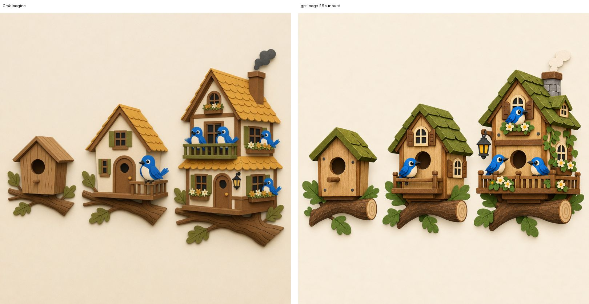
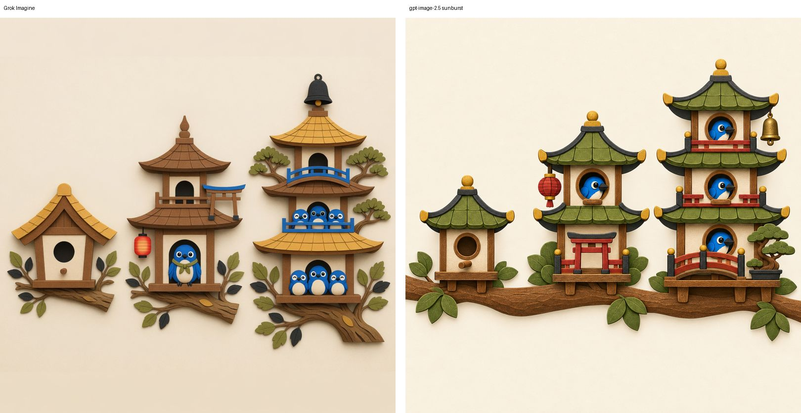
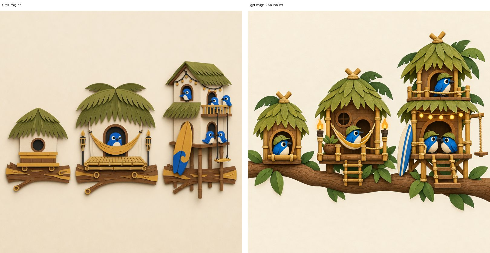
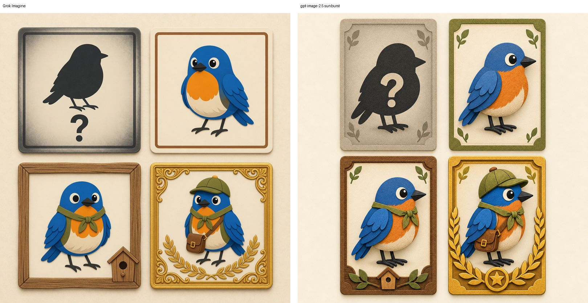
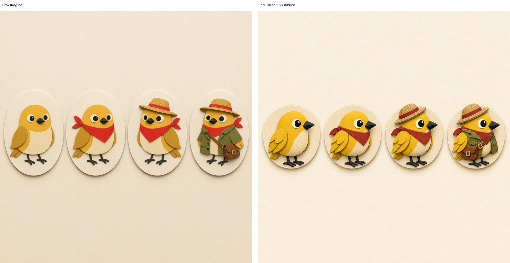
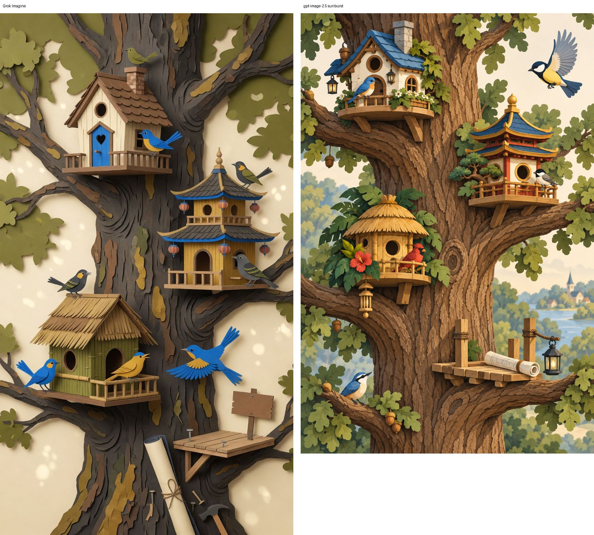
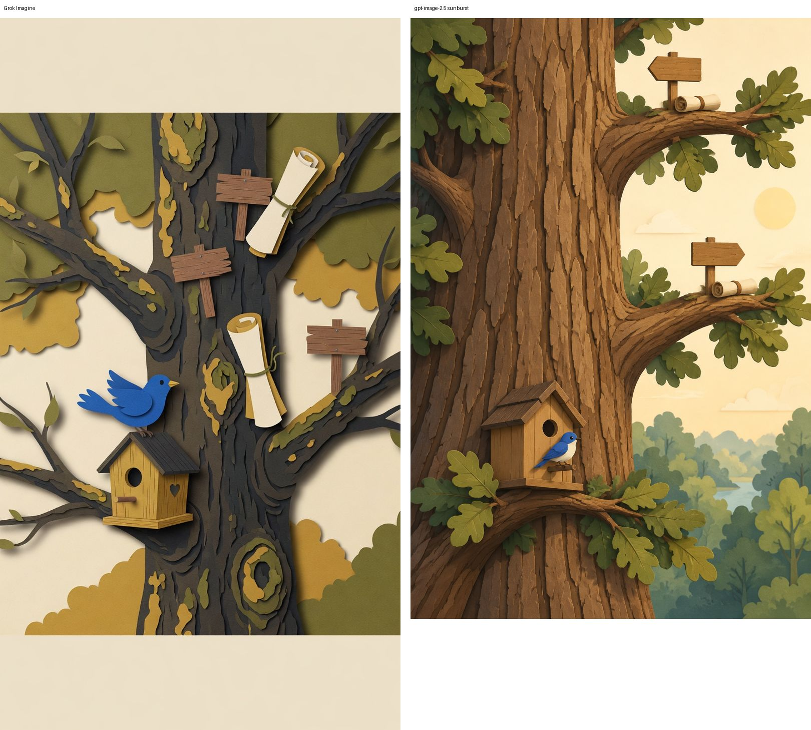

Find the Bird: Sanctuary · visual spike · 2026-09-16
Houses and portraits are producible in the locked mascot style, by both models
Seven briefs (three house themes with three upgrade stages each, a four-state portrait card set, a four-step costume progression, an early and a developed tree) were sent to Grok Imagine and gpt-image-2.5 with the P3 Explorer Bluebird turnaround as the only reference. Everything below is concept art, not shippable assets: every image is a single composite sheet, not separated layers. Left panel Grok, right panel gpt-image-2.5.
Verdict
Houses: green on both. Stage progression, resident capacity growth (1 → 3 perches) and the cardstock look all held on all three themes. Portraits and costumes: green with one shared trap. Both models turned the "robin" blue because the mascot reference dominates; species colour must be pinned by an explicit palette line or a species reference, not by name. Tree: Grok wins on style, gpt-image-2.5 wins on depth, neither is usable as-is. A real tree screen has to be assembled from separate trunk, branch, house and bird layers, so the tree briefs only answer "does the composition read at phone width" (yes).
| Brief | Grok Imagine | gpt-image-2.5 sunburst | Note |
|---|---|---|---|
| Cottage stages | Good, dramatic stage 3 (two-storey) | Good, more paper texture, consistent footprint | Both show windows, balcony, lantern, flowers escalating |
| Pagoda stages | Good, stage 3 overstuffed (6 birds) | Cleanest tiered growth of the set | Torii perch, bell, bonsai all landed |
| Tiki stages | Good, hammock and swing read | Good, string lights, ladders | Both added ladders/stilts unprompted, fine |
| Portrait states | Four states clear; square cards; robin is blue | Consistent card system with ornament escalation; robin is blue | Reference bleed on species colour in both |
| Costume progression | Silhouette preserved to step 4 | Silhouette preserved, tighter accessories | Jacket at step 4 is the recognisability risk at small size |
| Tree developed | On-style flat cardstock, 4 houses + signpost readable | Painterly drift, landscape background, off-style | Composition answer only |
| Tree early | Letterboxed 9:16, dark trunk, off-style | Off-style paint, but signpost teasing reads | Early state needs a designed empty-branch language |
House upgrade stages



Portraits and costumes


Tree composition


What this tells the production plan
- Modular houses are realistic. Each theme's three stages share a footprint and a branch; a stage-3 house is a stage-2 house plus a floor, a balcony and props. Generate stage 3 per theme, then cut stage 1 and 2 as sub-crops or regenerate with the stage-3 image as reference.
- Costumes as layers need a separate pass. Both models draw accessories fused to the bird. Layered outfits will need per-accessory transparent renders on a fixed base pose, which the flat-key cutout lane in the level editor already does for birds.
- Pin species colour explicitly. Always state "brown body, orange breast" rather than "robin" when the mascot is attached as reference.
- Model choice: gpt-image-2.5 returns 1254² with the mascot's paper grain and holds a consistent card/footprint system; Grok returns 1024² flatter cardstock and is the better tree stylist. Either is fine for houses and portraits; use gpt-image-2.5 for card systems, Grok or a hand-built layer stack for the tree.
- Spend (merceka ledger): Grok 7 calls $0.185 agent-token meter (image tool not itemised, subscription); gpt-image-2.5 7 calls $0.355. About 25–40 s per image on both.